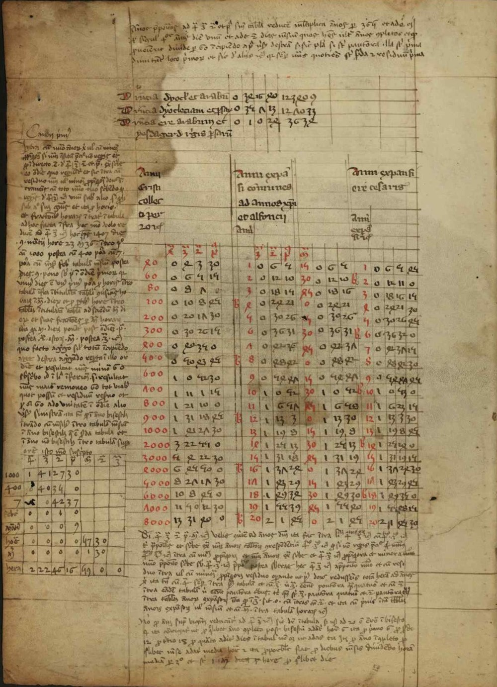
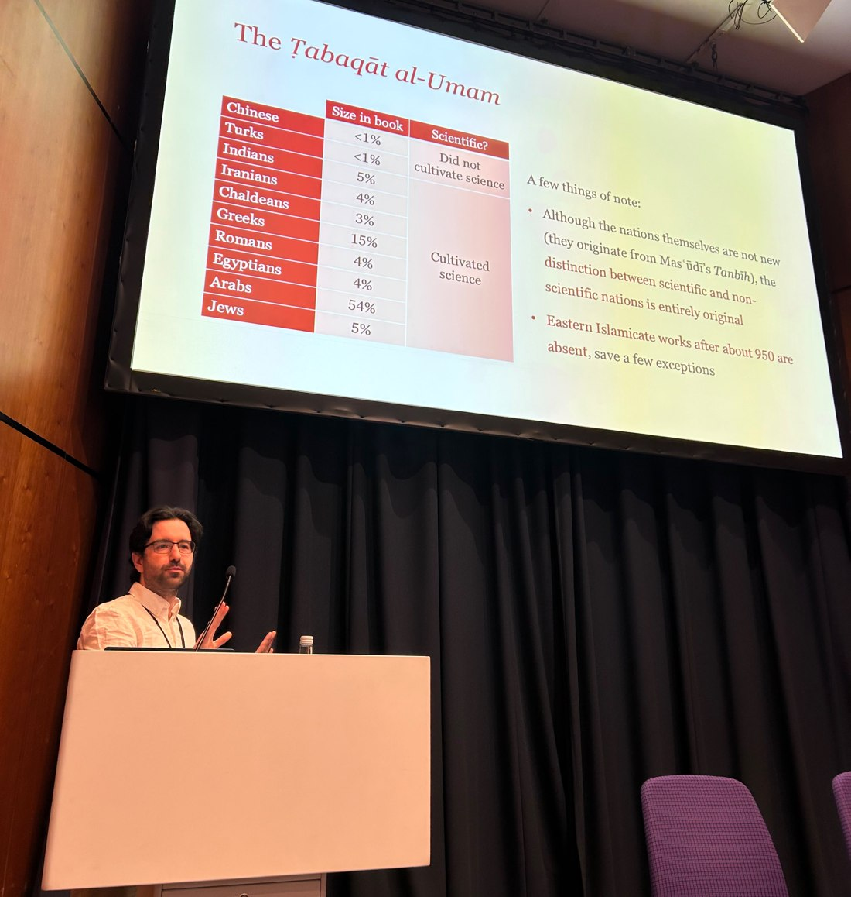

Abstract. Large language models (LLMs) are increasingly proposed as scalable solutions to the global mental health crisis. But their deployment in psychiatric contexts raises a distinctive ethical concern: the problem of atypicality. Because LLMs generate outputs based on population-level statistical regularities, their responses—while typically appropriate for general users—may be dangerously inappropriate when interpreted by psychiatric patients, who often exhibit atypical cognitive or interpretive patterns. We argue that standard mitigation strategies, such as prompt engineering or fine-tuning, are insufficient to resolve this structural risk. Instead, we propose dynamic contextual certification (DCC): a staged, reversible and context-sensitive framework for deploying LLMs in psychiatry, inspired by clinical translation and dynamic safety models from artificial intelligence governance. DCC reframes chatbot deployment as an ongoing epistemic and ethical process that prioritises interpretive safety over static performance benchmarks. Atypicality, we argue, cannot be eliminated—but it can, and must, be proactively managed.

I am a philosopher and historian of science working on the material conditions of scientific practice. I am a Ph.D. candidate in Philosophy at the University of California San Diego, where I expect to complete my degree in June 2027.
In my work, I apply the reasoning and methods from philosophy of science and social sciences to questions in the history of scientific practice, in order to understand how the specific material conditions of writing contributed to the development of scientific products. My dissertation examines how the transmission of paper from the medieval Islamicate world impacted the production of intermediary documentation (such as note-taking or computation), with special attention to the transmission of astronomical traditions in medieval Iberia.
Beyond the dissertation, I work on the philosophy of social science and philosophical perspectives on literacy. My co-authored publications include "Going Humean on the Flow of Time" (with Craig Callender) and "The Problem of Atypicality in LLM-Powered Psychiatry" (with Eugene Chua and Harman Brah). Before my doctorate, I studied philosophy as an undergraduate, worked for a year in academic publishing, and completed a master's degree in history and philosophy of science.
When I am not doing research, you can find me cooking, reading fantasy novels or dancing flamenco.

Publications
Abstract. We argue that the problem of the flow of time is a special problem, one unlike many other challenges in reconciling temporal phenomena with time in physics. After clarifying this point, we develop a Humean account of the flow of time according to which the psychological stream of experience explains why we think the world is tensed. On our account, the flow of time is not all inferential, as the invitation to think time flows comes from the deepest aspects of human experience, making it an offer we cannot refuse.
Works in Progress

Selected Talks

Teaching
Curriculum Vitae
A full account of my education, research, teaching, and service is in my curriculum vitae.
Get in touch
Department of Philosophy
University of California, San Diego
9500 Gilman Drive #0119
La Jolla, CA 92093-0119
Office: RWAC 0436